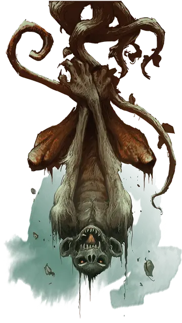

Су-монстр
Su-monster
Средний Монстр, хаотично-злой

Класс Доспеха 12
Хиты 27 (5к8 + 5)
Скорость 30 футов, лазая 30 футов
| мод | спас | ||
|---|---|---|---|
| СИЛ | 14 | +2 | +2 |
| ЛОВ | 15 | +2 | +2 |
| ТЕЛ | 12 | +1 | +1 |
| мод | спас | ||
|---|---|---|---|
| ИНТ | 9 | −1 | −1 |
| МДР | 13 | +1 | +1 |
| ХАР | 9 | −1 | −1 |
Навыки Атлетика +6, Восприятие +3
Чувства пассивное Восприятие 13
Опасность 1 (200 опыта)
Бонус мастерства +2
Действия
Мультиатака. Су-монстр совершает две атаки: одну укусом и одну когтями.
Укус. Рукопашная атака оружием: +4 к попаданию, досягаемость 5 футов, одна цель. Попадание: 4 (1к4 + 2) колющего урона.
Когти. Рукопашная атака оружием: +4 к попаданию, досягаемость 5 футов, одна цель. Попадание: 7 (2к4 + 2) рубящего урона, или 12 (4к4 + 2) рубящего урона, если су-монстр висит на хвосте, и все четыре его лапы свободны.
Психическое сдавливание (перезарядка 5–6). Су-монстр нацеливается на одно существо, которое он может видеть в пределах 30 футов от себя. Цель должна совершить спасбросок Мудрости Сл 11, получая 17 (5к6) урона психической энергией и ошеломлено на 1 минуту, при провале. Ошеломлённая цель может повторять этот спасбросок в конце каждого своего хода, оканчивая эффект на себе при успехе.
Описание
Су-монстры — хитрые, злые приматы, которые населяют заброшенные пустынные районы и пещеры. Взрослые особи достигают 5 футов в высоту и имеют длинные, цепкие хвосты. Хотя они могут держать инструменты и оружие своими хвостами или когтистыми лапами, су-монстры предпочитают разрывать добычу своими когтями. Взрослые су-монстры могут также проецировать взрывы псионической энергии, которые оставляют врагов ошеломлёнными и неспособными бежать или защищаться.
Су-монстр спит, вися вверх тормашками, зацепившись своим хвостом. Во время бодрствования, в этой позиции, он также может делать сокрушительные атаки, раздирая врагов всеми четырьмя когтями.
Су-монстры общаются молча, используя свои цепкие хвосты, чтобы делать жесты. Они обычно убивают больше, чем могут есть, хоронят остатки и отмечают своё местоположение имуществом жертвы.